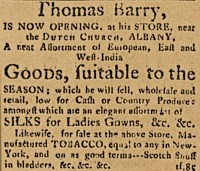

by
Stefan Bielinski
Thomas Barry was an Irish businessman who lived in Albany for more than sixty years.
According to his burial stone, he was born about 1738. He may have been the Thomas Barry identified as a baker on the census of Albany householders taken in 1756. In 1755, a Thomas Barry married Maria Bogardus. Their daughter was baptized at St. Peter's Anglican church in July 1756. He was a member of St. Peter's. But all subsequent infomation names his wife (and then widow) as Ann Barry.
From the 1760s until his death, this newcomer was an Albany mainstay. He paid taxes on his first ward property, supported his churches, and belonged to an Albany militia company. His store near the Dutch church was advertized in the Albany Gazette. He offered a range of imported goods - particulary cloths, and accepted "country produce" in return.
Barry supplied tobacco and other items to Sir William Johnson for the Indians. He also was the business partner of Joshua Bloore in "Barry & Bloore." Their clients ranged far from Albany and included Philip Skene of the Champlain Valley - to whom they were regular suppliers.
At the outbreak of hostilities in 1775, Barry & Bloore provided supplies to the Albany Committee to be sent to Ticonderoga. However, Bloore was a British sympathizer - thus stifling their business. Traditional sources state that Thomas Barry took his family to Philadelphia for a few years during the war. A child of Thomas and Ann Barry was baptized in a Catholic church in Philadelphia in February 1779.  However, by 1782, Barry was again advertizing in the Albany newspaper.
However, by 1782, Barry was again advertizing in the Albany newspaper.
Over the next two decades, Thomas Barry was involved in a number of Albany-based business ventures. His substantial Court Street home was an important feature of the downtown business district. By 1790, he was operating a tobacco manufactory on his property which also housed his daughter and new husband, the up-and-coming merchant Samuel Hill. In 1800, his household had nine members and a slave - even though Hill's household was listed separately and next door..
After several decades at St. Peter's, by the 1790s Barry was able to join with a number of prominent Albany Roman Catholics to establish St. Mary's church - the second Catholic parish in New York State. He was the first president of its Board of Trustees in 1796, took the lead in soliciting subscriptions for the church, and helped lay the cornerstone for the church building in September 1797.
Thomas Barry died in January 1813 at the age of seventy-five. This pioneer Catholic was buried in the St. Mary's cemetery plot. He was called a "respected merchant and worthy citizen. A funeral sermon was preached in the Catholic Church by Rev. Mc Quade." His will passed probate in April. Widow Ann Barry lived until 1831.

notes
 Sources: The life of Thomas Barry is CAP biography number 1821. This sketch is derived chiefly from family and community-based resources. Could he have been the older brother (or kinsman) of American Naval pioneer and Philadelphia resident John Barry?
Sources: The life of Thomas Barry is CAP biography number 1821. This sketch is derived chiefly from family and community-based resources. Could he have been the older brother (or kinsman) of American Naval pioneer and Philadelphia resident John Barry?
From its inception in 1771, the Albany Gazette regularly carried Barry's ads. These items appeared in 1787.
The "Skenesborough Papers" at the Fort Ticonderoga Museum for the early 1770s reveal the intensity of their business.
first posted: 4/1/04